Government study helps students understand political power, public institutions, citizenship, and how decisions are made for the common good.
Government refers to the institutions, rules, and officials that exercise authority within a society. It creates laws, maintains order, provides public services, and resolves conflicts. Government can exist at local, regional, and national levels, and it affects nearly every aspect of citizens' daily lives.
Studying government enables learners to understand how political authority is structured, how leaders are chosen, and how policies are made. It is essential for informed citizenship and participation in civic life.
Government is the organized way a society makes decisions, enforces rules, and serves its people.
The nature of government includes its authority, legitimacy, and structure. Governments exist to maintain public order, protect rights, provide public goods, promote justice, and support the welfare of citizens. They balance competing interests and allocate resources through laws and policies.
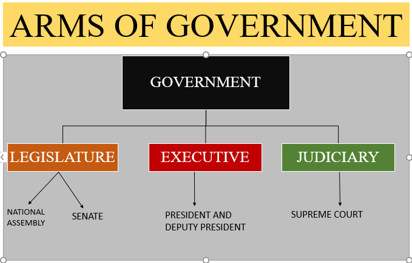
Governments also defend the nation, manage public finances, regulate business and the environment, and invest in education and infrastructure. How effectively a government performs these tasks influences trust, stability, and development.
The purpose of government is to organize society so people can live together peacefully, fairly, and productively.
Governments perform a range of functions: lawmaking, administration, justice, security, taxation, and public service delivery. They create schools, hospitals, roads, and social programs. Governments collect taxes and use those funds to pay for services that individuals cannot provide on their own.
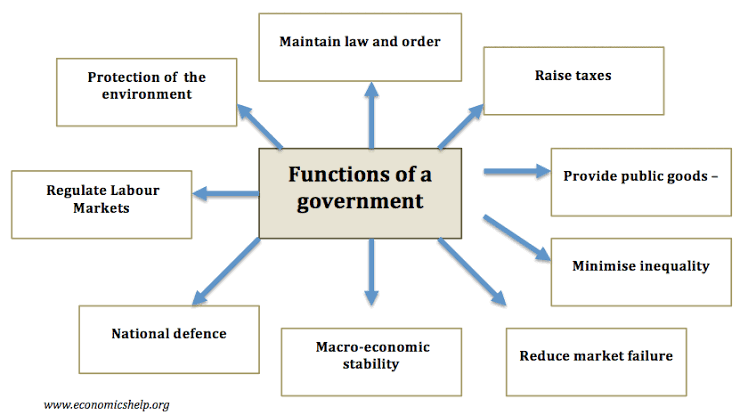
Effective governments also regulate the economy, maintain public order, provide emergency services, and safeguard the environment. Understanding these functions helps citizens assess how well their government is meeting public needs.
Government functions are the actions taken to protect citizens, promote development, and secure rights.
Forms of government describe how power is distributed and who makes decisions. Common forms include democracy, monarchy, authoritarianism, and federalism. In a democracy, citizens participate in choosing leaders; in a monarchy, a king or queen reigns; in authoritarian systems, power is concentrated in few hands.
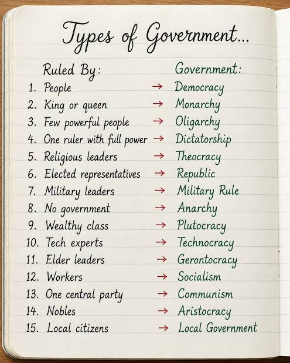
Federal systems split power between central and regional governments, while unitary systems centralize authority. Governments may also be presidential or parliamentary, depending on how the executive and legislative branches relate.
The form of government shapes how power is held and how citizens take part in public decisions.
Many governments divide power into three branches: executive, legislative, and judicial. This separation helps prevent any one branch from becoming too powerful. Each branch has different responsibilities and checks the others to ensure accountability.
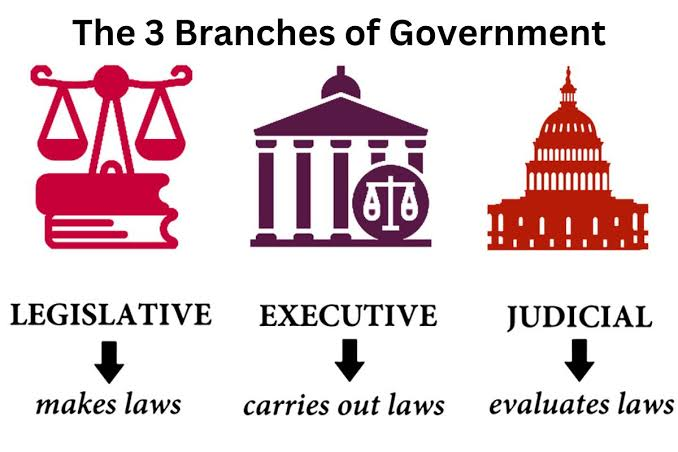
In practice, the executive implements policy, the legislature makes laws, and the judiciary interprets laws. This system supports democracy by distributing authority and protecting rights.
Separation of powers ensures balance, accountability, and the rule of law in government.
The executive branch carries out government policies and runs public administration. It includes presidents, prime ministers, ministers, and civil servants. The executive manages ministries, enforces laws, and represents the country in foreign affairs.
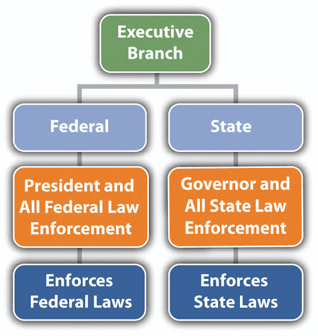
Executives propose budgets, implement programs, supervise agencies, and respond to crises. Their leadership affects how effectively services are delivered and whether government priorities match citizen needs.
The executive turns laws and policies into action, managing the day-to-day work of government.
The legislative branch makes laws, debates public issues, approves budgets, and monitors the executive. It consists of elected representatives serving in parliament, congress, or assembly. Legislators represent citizens’ voices and act as a link between the public and government.
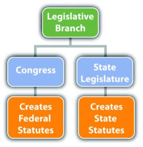
Legislative committees examine policies, hold hearings, and review government spending. Lawmakers also pass bills, amend existing laws, and approve national budgets that determine public spending and services.
The legislature gives citizens a voice in lawmaking and keeps the government accountable.
The judicial branch interprets laws and resolves disputes. It includes courts, judges, and legal institutions. The judiciary protects the constitution, enforces rights, and ensures that laws are applied equally.
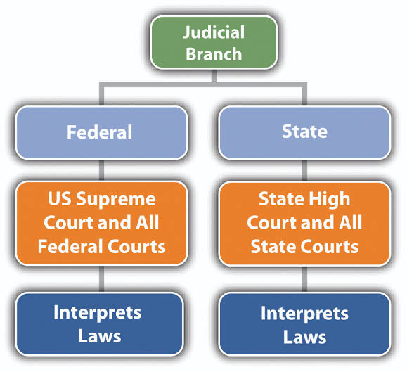
Courts hear cases involving criminal offenses, civil disputes, constitutional issues, and administrative decisions. Judicial review allows courts to strike down laws or actions that violate the constitution or fundamental rights.
The judiciary protects the rule of law by ensuring justice is fair, impartial, and available to all.
Electoral systems determine how votes are translated into political seats and which representatives citizens elect. Common systems include first-past-the-post, proportional representation, and mixed systems. Each system affects party competition, voter choice, and how well elected bodies reflect society.
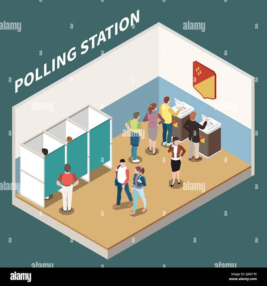
In first-past-the-post systems, the candidate with the most votes wins. Proportional representation awards seats based on party vote share. Mixed systems combine both methods. Understanding electoral rules helps citizens evaluate fairness and the quality of representation.
The electoral system shapes how voters choose leaders and how those leaders represent citizens.
Public administration is the implementation of government policy through agencies and civil servants. Policy making is the process of choosing goals, comparing solutions, and deciding on programs. Effective administration requires planning, organization, leadership, and accountability.
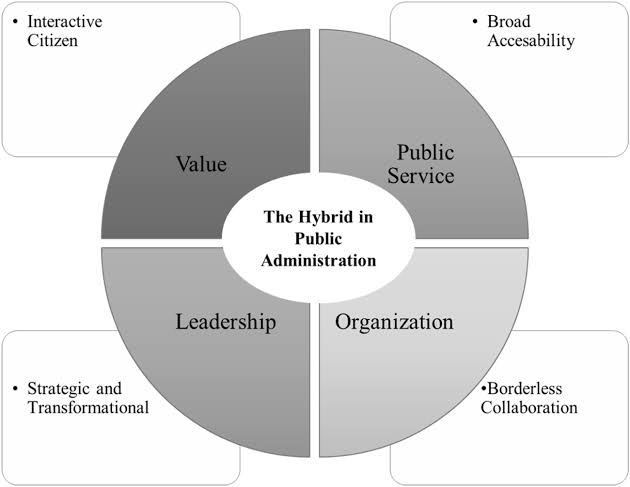
Public policy covers areas such as health, education, security, infrastructure, and the economy. Administrators manage budgets, personnel, and service delivery while responding to citizen needs and legal requirements.
Good public administration turns policy ideas into services that citizens can rely on.
Citizenship means belonging to a political community and enjoying rights while fulfilling responsibilities. Rights include freedom of speech, voting, equality before the law, and access to basic services. Responsibilities include obeying laws, paying taxes, participating in civic life, and respecting others’ rights.
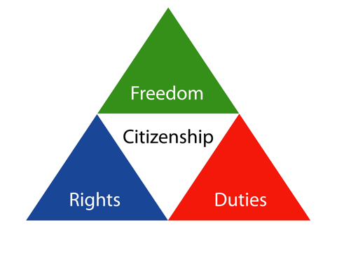
Active citizens vote, stay informed, volunteer, and hold leaders accountable. This strengthens democracy and helps governments respond to public needs.
Citizenship is a partnership between the government and the people, built on rights and responsibilities.
Governance refers to how rules, institutions, and practices shape decision-making and the exercise of power. Democracy is a system where citizens participate directly or indirectly in choosing leaders and making public decisions. Good governance means transparency, accountability, participation, responsiveness, and the rule of law.
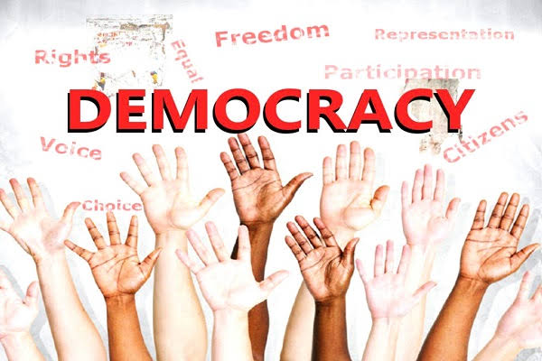
In democratic systems, institutions such as courts, legislatures, and electoral commissions protect rights and check power. Citizens contribute by voting, engaging in debate, joining civic groups, and seeking information. Strong governance creates trust in public institutions and supports social progress.
Democracy depends on open rules, fair elections, and active citizens who demand accountability.